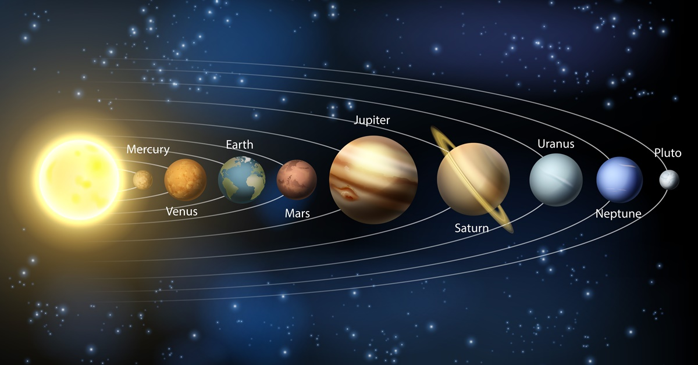

Classificação das constelações
O Sistema Solar é um conjunto formado por oito planetas e outros corpos celestes, que orbitam o Sol, a sua principal estrela. Está localizado na Via Láctea, uma das galáxias que formam o Universo. São planetas do Sistema Solar: Mercúrio, Vênus, Terra, Marte, Júpiter, Saturno, Urano e Netuno.

Mercúrio é o planeta mais próximo do Sol, cerca de 57.910.000 km, e é o que possui a menor massa, ou seja, é o menor entre os planetas do Sistema Solar. A temperatura na sua superfície pode chegar, durante o período diurno, a 550ºC.
O planeta tem em sua composição silicatos e basaltos, o que o assemelha à Terra. Mercúrio não possui satélites, e sua superfície é repleta de crateras resultantes de meteoritos que colidiram com o planeta. Sua atmosfera é composta, em sua maior parte, por hélio e, em pouca quantidade, por hidrogênio.
também conhecido como Estrela Dalva, é o segundo planeta em relação ao Sol, estando, aproximadamente, a 108.200.000 km de distância. É um planeta de fácil visibilidade, antes do nascer ou depois do pôr do Sol, a olho nu.
Suas características assemelham-se às da Terra, especialmente a massa, diâmetro e a gravidade. Outra semelhança com o nosso planeta encontra-se na atmosfera, composta por gás carbônico, nitrogênio e vapor d'água. É constituído de silicatos e basaltos.
Apesar dessas semelhanças, o planeta não apresenta condições para existência de vida, devido à grande concentração de gás carbônico que mantém a temperatura do planeta a mais de 460ºC. Não possui satélites naturais.
é o terceiro planeta na ordem de proximidade com o Sol, encontrando-se a 149.600.000 km de distância desse. É o planeta que apresenta condições favoráveis à existência de vida. Sua atmosfera é composta por nitrogênio, oxigênio, vapor d'água e outros gases em menor quantidade.
Possui temperatura média de 14ºC. É constituído por silicatos e basaltos, e sua estrutura interna divide-se em núcleo, manto e crosta terrestre. O planeta possui apenas um satélite natural, a Lua, que se encontra a cerca de 384.400 km de distância dele.
também chamado de Planeta Vermelho, é o quarto planeta na ordem em relação ao Sol, estando a, aproximadamente, 227.940.000 km de distância dele. É um dos planetas que também apresentam condições de ser visto a olho nu. É constituído por silicatos e basaltos, e sua atmosfera é composta basicamente por gás carbônico, nitrogênio e alguns vestígios de oxigênio, monóxido de carbono e vapor d'água.
A atmosfera menos espessa propicia uma variação de temperatura entre -76ºC e -10ºC. O solo de Marte é repleto de crateras formadas pelo impacto de meteoritos. Esse solo é rico em ferro e silício, o que dá a coloração avermelhada ao planeta. Marte possui dois satélites naturais.
é o maior planeta do Sistema Solar possuindo uma massa 318 vezes maior que a da Terra. Diferente dos quatro planetas mais próximos ao Sol, Júpiter é constituído de gases como hidrogênio, hélio, metano, amônia e vestígios de vapor d'água.
O planeta encontra-se a, aproximadamente, 778.330.000 km do Sol, e é conhecido como o Gigante Gasoso. A temperatura em sua superfície é muito baixa, chegando -100ºC. Júpiter é formado por anéis constituídos de poeira fina e possui 16 satélites naturais.
encontra-se a, aproximadamente, 1.429.400.000 km do Sol e é o segundo maior planeta do Sistema Solar. Sua composição assemelha-se à de Júpiter: hidrogênio, hélio, metano, amônia e vestígios de vapor d'água. A temperatura em Saturno pode chegar a -140ºC. Esse planeta é muito conhecido pelos seus anéis, compostos por gelo, que refletem até 80% da radiação solar. Saturno possui 18 satélites naturais, sendo o maior deles conhecido como Titã.
um dos planetas gasosos, é o terceiro maior planeta do Sistema Solar, estando a, aproximadamente, 2.880.990.000 km do Sol. Suas características assemelham-se às de Júpiter e Saturno.
É constituído por gases como hidrogênio, hélio e metano, que lhe confere a cor azulada. A temperatura no planeta pode chegar a -200ºC. O planeta possui um sistema de anéis, descoberto em 1977, e possui cerca de 27 satélites naturais. O planeta possui também, aproximadamente, 27 luas.
foi descoberto em 1845 e não pode ser visto a olho nu. É o último planeta do Sistema Solar em relação ao Sol, estando a cerca de 4.504.300.000 km de distância desse.
Sua composição assemelha-se a dos demais planetas gasosos, sendo constituído por gases como o hidrogênio, hélio, e metano. A temperatura no planeta é extremamente baixa, chegando a -218ºC. O planeta possui cerca de 13 satélites naturais e também apresenta um sistema de anéis.
Plutão é um planeta anão que está localizado a 5,9 bilhões de quilômetros distante do Sol.Vale ressaltar que Plutão não é mais considerado um planeta do sistema solar desde 2006. Nesse ano, a União Astronômica Internacional o classificou como um "planeta anão" por conta das novas classificações que definiam um corpo celeste como planeta.
são agrupamentos de estrelas ligadas por linhas imaginárias usadas para representar objetos, animais, criaturas mitológicas ou deuses